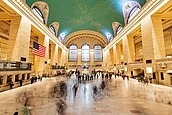

New York City
Grand_Central_Station
Statue Of Liberty
New York City |
 Grand_Central_Station |
Statue Of Liberty |
New York, often called New York City (NYC),is the most populous city in the United States. New York City is also the most densely populated major city in the United States. Located at the southern tip of New York State, the city is based in the Eastern Time Zone and constitutes the geographical and demographic center of both the Northeast megalopolis and the New York metropolitan area, the largest metropolitan area in the world by urban landmass
Grand Central Terminal (GCT; also referred to as Grand Central Station or simply as Grand Central) is a commuter rail terminal located at 42nd Street and Park Avenue in Midtown Manhattan, New York City. Grand Central is the southern terminus of the Metro-North Railroad 's Harlem, Hudson and New Haven Lines, serving the northern parts of the New York metropolitan area. It also contains a connection to the New York City Subway at Grand Central–42nd Street station. The terminal is the second-busiest train station in North America, after New York Penn Station.
The Statue of Liberty is a colossal neoclassical sculpture on Liberty Island in New York Harbor in New York City, in the United States. The copper statue, a gift from the people of France to the people of the United States, was designed by French sculptor Frédéric Auguste Bartholdi and its metal framework was built by Gustave Eiffel. The statue was dedicated on October 28, 1886.